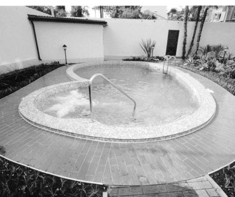
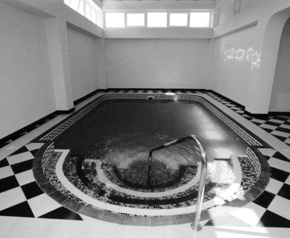
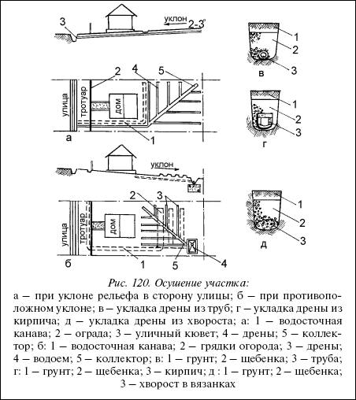
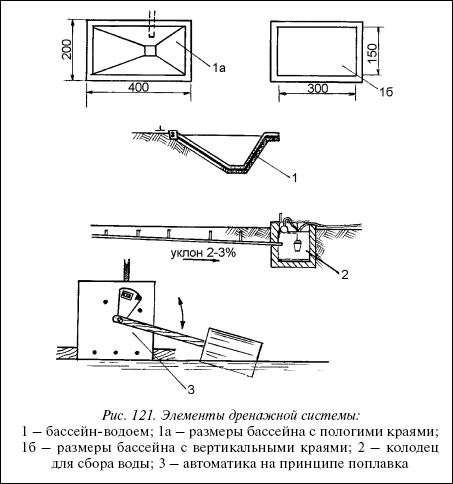
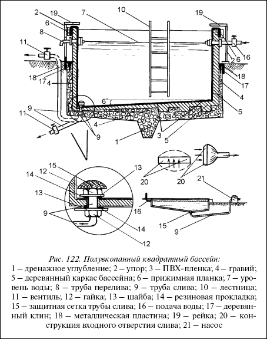
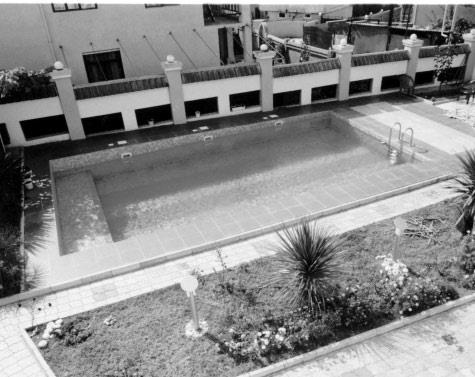
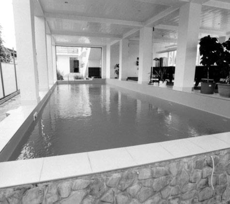
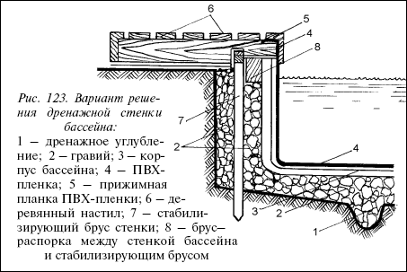
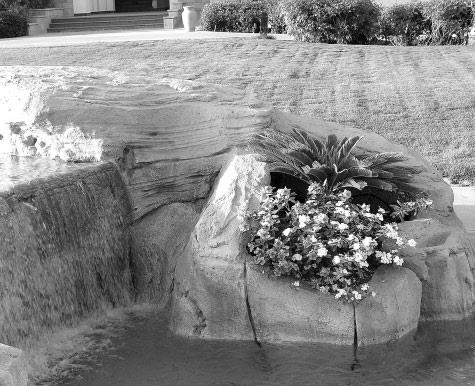
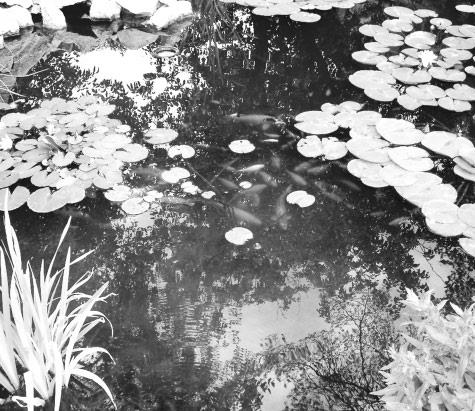

Полувкопанный квадратный бассейн.

Для начала подробно опишем технологические операции возведения на участке бассейна размером 2,5х2,5 м. Бассейн полувкопанный, значит, предстоят работы по выемке грунта.


Роется котлован 2,5х2,5 м, глубиной 0,6 м. Сразу сделайте дренаж. Это необходимо для того, чтобы создать своего рода прослойку, не допускающую выхода влаги непосредственно на дно котлована. Первое, что надо делать – это подрезать дно котлована (с уклоном 5–6°) к центру. В центре котлована делаете ямку глубиной 0,2 м. Ямку полностью засыпаете гравием и затем покрываете гравием все дно котлована. Слой гравия должен быть не менее 6-10 см. Дно котлована теперь имеет дренаж.

Рис. 120. Осушение участка:
а – при уклоне рельефа в сторону улицы; б – при противоположном уклоне; в – укладка дрены из труб; г – укладка дрены из кирпича; д – укладка дрены из хвороста; а: 1 – водосточная канава; 2 – ограда; 3 – уличный кювет; 4 – дрены; 5 – коллектор; б: 1 – водосточная канава; 2 – грядки огорода; 3 – дрены; 4 – водоем; 5 – коллектор; в: 1 – грунт; 2 – щебенка; 3 – труба; г: 1 – грунт; 2 – щебенка; 3 – кирпич; д: 1 – грунт; 2 – щебенка; 3 – хворост в вязанках
К дренажу стен бассейна вы приступите позже. Сначала надо будет возвести боковые стены, оставив зазор между ними и стенками котлована не менее 7 см. В этот зазор и будет засыпан слой гравия, который преградит путь почвенной влаге к стенкам непосредственно бассейна. В зависимости от принятого вами решения бассейн может быть выполнен из кирпича, бетона, дерева или же листового металла 0,8–1 мм толщиной. Для детского бассейна таких размеров самым лучшим материалом будет дерево, лучше всего сосна, имеющая хорошую пропитку. Сняв размеры с учетом зазоров для бокового дренажа, начинайте обрезку досок по сделанной разметке.

Рис. 121. Элементы дренажной системы:
1 – бассейн-водоем; 1а – размеры бассейна с пологими краями; 1б – размеры бассейна с вертикальными краями; 2 – колодец для сбора воды; 3 – автоматика на принципе поплавка
Подготовленные к сборке доски необходимо загрунтовать олифой и покрыть эмалевой краской или лаком. Затем начинайте сбивку досок в отдельные секции (щиты). Советуем сначала изготовить секции (щиты) на поверхности, а затем секционную сборку проведете в котловане бассейна.

Рис. 122. Полувкопанный квадратный бассейн:
I – дренажное углубление; 2 – упор; 3 – ПВХ-пленка; 4 – гравий; 5 – деревянный каркас бассейна; 6 – прижимная планка; 7 – уровень воды; 8 – труба перелива; 9 – труба слива; 10 – лестница;
II – вентиль; 12 – гайка; 13 – шайба; 14 – резиновая прокладка; 15 – защитная сетка трубы слива; 16 – подача воды; 17 – деревянный клин; 18 – металлическая пластина; 19 – рейка; 20 – конструкция входного отверстия слива; 21 – насос
Во время сборки деревянной чаши бассейна не забудьте по разметке сделать вырезы в секциях для сливной трубы 9 и трубы перелива 8. При этом учитывайте, что труба подачи воды 16 в бассейн будет находиться с противоположной стороны. Подвод сливной трубы с наличием на ней фильтрующей сетки 15 делаете до окончательной установки чаши бассейна в котловане. Диаметр сливной трубы советуем брать не менее 30 мм. Чем больше диаметр трубы, тем меньше вероятность засора. Длина и конфигурация такой трубы зависит от особенности конструкции сливной системы (самотек или принудительный забор воды насосом).


На обеих ее концах должна быть нарезана резьба. Особые требования к той части трубы, которая будет скрепляться с деревянной основой бассейна (через подготовленное отверстие). Это соединение должно обеспечить прочность и герметичность. Конструктивно это дано на фрагменте к рисунку 122.С внешней стороны труба плотно прилегает к деревянной основе, герметичность обеспечивается шайбой 13 и резиновой прокладкой 14. С внутренней стороны труба имеет такое же плотное прилегание через шайбу 13 и прокладку 14. Прижим шайб и прокладок обеспечивается гайками 12. На выступающий конец трубы навинчивается (насаживается) сетчатый фильтр 15. Забегая вперед скажем, что окончательное закрепление сливной трубы 9 изнутри произойдет только тогда, когда деревянная чаша бассейна будет выложена ПВХ-пленкой (полиэтиленовой пленкой) и в этой пленке будет вырезано отверстие по диаметру сливной трубы. Только тогда надевается резиновая прокладка 14, шайба 13, окончательно завинчивается гайка 12 и закрепляется сетка 15.
Монтажу сливной трубы уделяется такое внимание потому, что впоследствии будет очень трудно, а то и невозможно устранить протекание бассейна в этом месте. Точно так же следует прикрепить к корпусу и трубу перелива 8. Труба же подачи воды может и не иметь жесткого крепления, если предусматривается убирать ее вообще на ночь. Если же запланирована стационарная подача воды, имеющая свой вентиль, то крепление трубы тоже должно соответствовать всем требованиям.

Рис. 123. Вариант решения дренажной стенки бассейна:
1 – дренажное углубление; 2 – гравий; 3 – корпус бассейна; 4 – ПВХ-пленка; 5 – прижимная планка ПВХ-пленки; 6 – деревянный настил; 7 – стабилизирующий брус стенки; 8 – брусраспорка между стенкой бассейна и стабилизирующим брусом
Теперь возвратимся к вопросу окончательной сборки деревянного каркаса бассейна. Изготовьте 12 деревянных клиньев длиной 20 см и шириной 6,5 см. Подготовьте также 12 металлических пластин 20x20 см. Клинья 17 вставьте в зазоры между стенками котлована (с этой стороны у клина будет металлическая пластина 18 для увеличения площади опоры на грунт). Клинья вставляйте по три с каждой стороны. Окончательно забивайте их только после того, как во все зазоры по периметру будет засыпан гравий, обеспечивающий боковой дренаж котлована. Гравий после засыпки слегка утрамбовывайте. После этого окончательно забейте клинья 17.


Вырезаем (или приобретаем готовую) поливинилхлоридную (или полиэтиленовую) пленку 3 размером 5x5 м. Выкладываем ее по объему бассейна, заворачиваем образующиеся на углах клинья во внешнюю сторону (к деревянному каркасу). Края пленки загибаем за верхний край деревянного каркаса и закрепляем рейкой 19 и планкой 6. По выступу сливной трубы 8 вырезаем в пленке отверстие, надеваем пленку на трубу, расправляем, сверху надеваем резиновую прокладку 14, шайбу 13 и зажимаем гайкой 12. Надеваем (или навинчиваем) на выступающий конец трубы 9 сетчатый фильтр 15, и система слива смонтирована.
Таким же образом прикрепляется к деревянному корпусу труба перелива 8. На рисунке 122труба 16 подачи воды дана в стационарном исполнении. Но она может быть и без жесткой фиксации. Обсыпаем бассейн грунтом до высоты выступающей части деревянного каркаса. Сверху обкладываем дерном. Со стороны лестницы 10 делаем небольшую площадку, выложенную кафелем. Это для того, чтобы не заносить грязь на ногах в бассейн. Для того, чтобы, хватаясь за края деревянного каркаса, не повредить пленку 3, накладываем облицовочные рейки 19 шириной 10 см, которые фиксируются на упорах 2.
Затем заполняем бассейн водой, сливаем воду через четыре часа, заполняем заново и – купальный сезон можно открывать.
МатериалыМатериалы, которые обязательно понадобятся при сооружении такого бассейна:
1. Доски деревянные (желательно сосна) – шириной 200 мм, толщиной 25 мм и длиной 1800 мм – 48 штук.
2. Доски деревянные (тоже сосна) – шириной 200 мм, толщиной 25 мм и длиной 2300 мм – 20 штук.
3. Брус деревянный (сосна) 50x50 мм, длиной 2500 мм – 12 штук.
4. Рейка деревянная 20x20 мм, длиной 2500 мм – 8 штук.
5. Пленка ПВХ (полиэтиленовая) – 5x5 м.
6. Водопроводные трубы (ПВХ-трубы или цветной металл), диаметр – от 30 мм, общей длиной 10–15 м.
7. Насос электрический (откачивающий) – один, мощностью 1 кВт (для данного бассейна можно обойтись без подающего насоса, заполнение водой осуществлять из водопроводной сети).
8. Гравий (крупный песок) для устройства дренажа котлована – 3 м .
9. Олифа, краска-эмаль (или лак) – по 3 банки.
10. Ножовка по металлу, ножницы для резки металла, плашка (клупп), гаечные ключи, ключ разводной, плоскогубцы, молоток, водопроводные вентили по потребности, гвозди, шайбы, прокладки.
11. Лестница для входа в бассейн (одна).